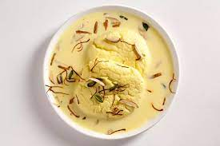
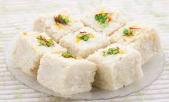
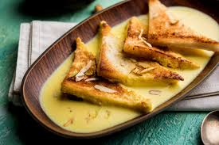

Welcome to Sweets Master
1.Rasmalai
Similar to the rasgulla, rasmalai is made from chenna flavored with
cardamom, which is soaked in malai (clotted cream) and turned into flatter
balls of dough.These are then cooked in a mixture of hot water and rose
water, then cooked again in milk until it reduces to form a rich reduction
and finally topped with saffron and pistachios.

2.Kalakhand
Kalkhand is a popular type of milk cake, said to have originated either
in the northern state of Punjab or in the western state of Rajasthan. A creamy
concoction that lies somewhere between a cake and a soft fudge, it is made by
reducing cardamom flavored milk and sugar for hours until it solidifies into a
crumbly, firm cake, which is then topped with crunchy pistachios.

3.Shahi Tukda
Originating in the city of Hyderabad in the southern state of Telengana and
credited to the monarchs of the area, shahi tukda is truly a dessert fit for
kings (after all, the word shahi literally “royal” in Persian).Fried, sugar
syrup-coated bread is soaked with sweet rabri and topped with dried fruits
to make a creamy, crunchy delight.
